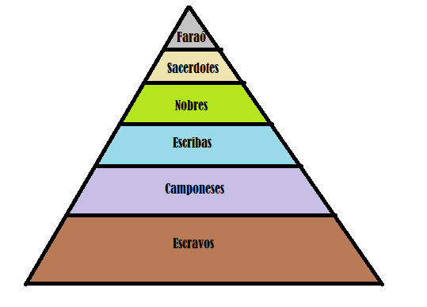

A civilização egípcia antiga desenvolveu-se no nordeste africano (margens do rio Nilo) entre 3.200 a.C. (unificação do norte e sul) a 32 a.C. (domínio romano).
Basicamente, o Antigo Egito era a estreita faixa de terra cultivada que se estendia por ambos os lados do Rio Nilo. O antigo Egito era geográfica e culturalmente uma civilização potâmica. Toda sua organização social e cultural se fundamentava na agricultura de regadio, organizada às margens do rio Nilo.
O rio Nilo foi fundamental para o surgimento dessa grande civilização, isso, por si só, não explica as características assumidas pela civilização egípcia. Entre 7000 e 5000 a.C.(antes de Cristo), a crescente inovação agrícola e a formação dos primeiros núcleos humanos sendetários promoveram o crescimento populacional, tornando necessária a construção de obras, como diques e canais, para melhorar o aproveitamento das águas do rio e aumentar a produção agrícola. Dessa forma, essas primeiras comunidades se unificaram e deram origen a confederações tribais.
No Egito faraônico, podemos reconhecer três camadas sociais principais: a nobreza, uma camada de servidores e trabalhadores que exerciam diversas funções e os camponeses. Os escravos, em menor número, podiam ser estrangeiros capturados nas guerras, filhos de escravizados ou trabalhadores que devem o Estado egípcio. Haviam os camponeses, que eram a grande parte da população, que trabalhavam nas atividades agropecuárias e eram obrigados a entregar parte da produção ao faraó. Haviam, também, os servidores do Estado que se destacavam os Escribas e Soldados, onde era um grupo que prestava serviços ao faraó e aos palácios e templos. E por fim, o faraó que personificava o Estado e se impunhava como soberano divino.
Observe agora uma representação da ordem das classes em uma pirâmide:
A economia egipcia baseava-se na agricultura. Os principais produtos eram cevada, trigo, linho, verduras e vinhas. A pesca, a caça e a criação de animais, como bois, cabras e aves, também eram praticadas pelos egípcios. O trabalho agrícola ocupava cerca de oito meses do ano. Nos quatro meses restantes, que correspondiam à época das inundações, os camponeses eram deslocados para a construção e manutenção dos canais de irrigação e para a edificação de grandes obras, como os templos, os palácios e as pirâmides.
No antigo Egito, entendia-se que homem e natureza deveriam conviver em harmonia para sempre. Seu culto era politeísta (crença em vários deuses, ao invés de um apenas, como na religião cristã), onde cada deus atuava em um campo específico da vida dos cidadãos. Haviam também deuses que combinavam o aspecto de homem e de outros animais, como por exemplo Anúbis, retratado com cabeça de chacal e corpo humano.
Além desse aspecto mais conhecido, os egípcios tinham por hábito eleger um deus como protetor de sua cidade. Além disso, eram erguidos vários templos para adoração de uma divindade em especial, onde se realizavam rituais e oferendas.
A religião ainda estava presente na estrutura de poder desta antiga civilização. O faraó declarava parentesco com os deuses e era neles que apoiava sua monarquia. Era o poderoso monarca que poderia assim, com sua ligação divina, proporcionar uma agricultura fértil, além de uma ótima condição de vida a cada cidadão.
Outra característica importante da religião egípcia era a crença na vida após a morte. De acordo com esta crença, o morto era julgado no Tribunal de Osíris. O coração era pesado e, de acordo com o que havia feito em vida, receberia um julgamento. Para os bons havia uma espécie de paraíso, para os negativos, Ammut devoraria o coração.